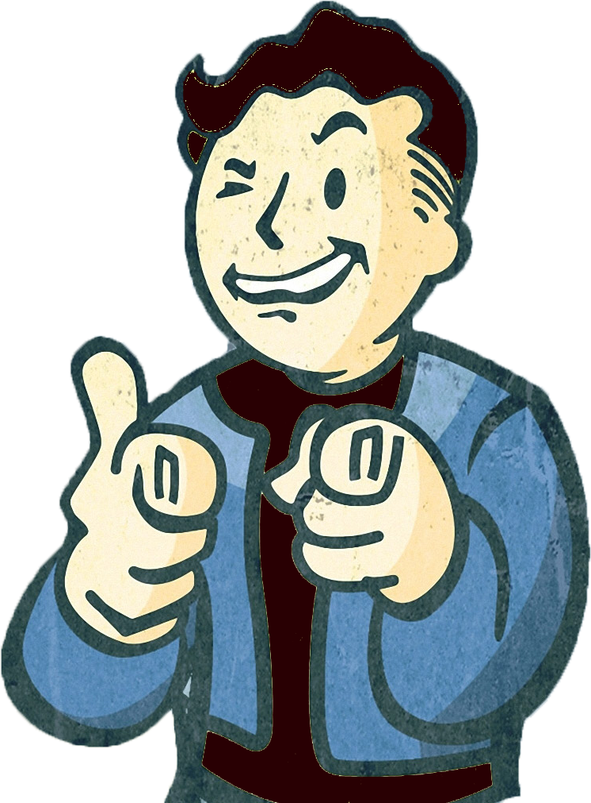

Projects
TradSessions.ie
- a platform for finding, sharing and reviewing Irish traditional music sessions. Check out the write up about it on
my Github
.
DoubleClicker
- a chrome extension that opens links in new tabs on a double click.
Thump
- fingerprint system to aid ID checking outside clubs.
Cans.ie
- a surprisingly popular website.
A Batteryless NFC sensor
- final year college project.
An Autonomous Taxi
- 3rd year college project.